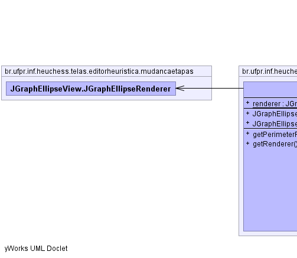
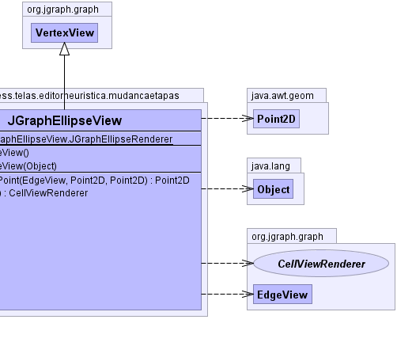

public class JGraphEllipseView
extends org.jgraph.graph.VertexView
|  |  |
| Modifier and Type | Class and Description |
|---|---|
static class |
JGraphEllipseView.JGraphEllipseRenderer |
| Modifier and Type | Field and Description |
|---|---|
static JGraphEllipseView.JGraphEllipseRenderer |
renderer |
| Constructor and Description |
|---|
JGraphEllipseView() |
JGraphEllipseView(java.lang.Object cell) |
| Modifier and Type | Method and Description |
|---|---|
java.awt.geom.Point2D |
getPerimeterPoint(org.jgraph.graph.EdgeView edge,
java.awt.geom.Point2D source,
java.awt.geom.Point2D p)
Returns the intersection of the bounding rectangle and the
straight line between the source and the specified point p.
|
org.jgraph.graph.CellViewRenderer |
getRenderer() |
getBounds, getCachedBounds, getCenterPoint, getHandle, getPerimeterPoint, setCachedBounds, updatechangeAttributes, childUpdated, createAttributeMap, getAllAttributes, getAttributes, getBounds, getCell, getCellAttributes, getCenterPoint, getChildViews, getDescendantViews, getEditor, getParentView, getRendererComponent, includeInGroupBounds, intersects, isLeaf, mergeAttributes, refresh, removeFromParent, scale, setAttributes, setBounds, setCell, translate, updateGroupBoundspublic static transient JGraphEllipseView.JGraphEllipseRenderer renderer
public JGraphEllipseView()
public JGraphEllipseView(java.lang.Object cell)
public java.awt.geom.Point2D getPerimeterPoint(org.jgraph.graph.EdgeView edge,
java.awt.geom.Point2D source,
java.awt.geom.Point2D p)
getPerimeterPoint in interface org.jgraph.graph.CellViewgetPerimeterPoint in class org.jgraph.graph.VertexViewpublic org.jgraph.graph.CellViewRenderer getRenderer()
getRenderer in class org.jgraph.graph.VertexView